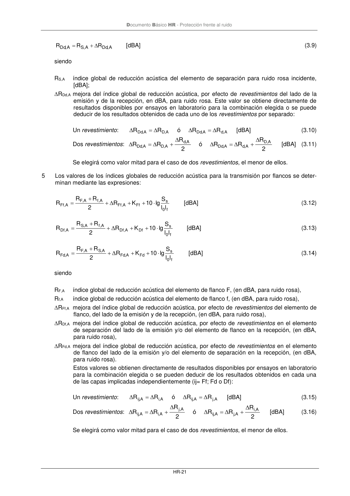
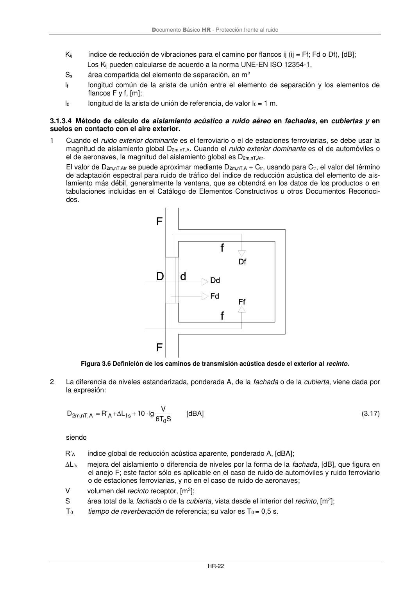

DB-HR · Fragmento de PDF p26 · versión 2019-12-20 · capa oficial
Formatos: JSON compacto · Markdown · PDF fuente
Ámbito del documento · texto del ámbito · documento y tablas
ID técnico a0051 · PDF pág. 26-28 · jerarquía no validada por persona · no es capítulo: sin_linea_de_encabezado · padre: raíz · literal original en el contenido: « »
= − = − = − = = − − si , ei ai A , ai ,n D 1, 0 s 0 n 1 F A , Fd R 1, 0 n 1 f A , Df R 1, 0 n 1 f F A , Ff R 1, 0 A , Dd R 1, 0 A 10 S A 10 10 10 10 lg 10 ' R [dBA] (3.8) siendo RDd,A índice global de reducción acústica para la transmisión directa, en dB (dBA, para ruido rosa); RFf,A índice global de reducción acústica para la transmisión indirecta, del camino Ff, en dB (dBA, para ruido rosa); RDf,A índice global de reducción acústica para la transmisión indirecta, del camino Df, en dB (dBA, para ruido rosa); RFd,A índice global de reducción acústica para la transmisión indirecta, del camino Fd, en dB (dBA, para ruido rosa); Dn,ai,A diferencia de niveles normalizada, ponderada A, para la transmisión de ruido aéreo por vía directa, a través de aireadores u otros elementos de construcciónpequeños, Dn,e,A, o por vía indirecta, Dn,s,A, a través de distribuidores y pasillos o a través de sistemas tales como con- ductos de instalaciones de aire acondicionado o ventilación; n número de elementos de flanco del recinto, que normalmente es 4 pero puede ser diferente según el diseño del recinto; Ss área compartida del elemento de separación, [m2]; A0 área de absorción equivalente de referencia, de valor A0=10 m2. 4 El índice global de reducción acústica para la transmisión directa se determina a partir de los datos del elemento de separación según la expresión que sigue: Documento Básico HR - Protección frente al ruido HR-21 A , Dd A , S A , Dd R R R + = [dBA] (3.9) siendo RS,A índice global de reducción acústica del elemento de separación para ruido rosa incidente, [dBA]; RDd,A mejora del índice global de reducción acústica, por efecto de revestimientos del lado de la emisión y de la recepción, en dBA, para ruido rosa. Este valor se obtiene directamente de resultados disponibles por ensayos en laboratorio para la combinación elegida o se puede deducir de los resultados obtenidos de cada uno de los revestimientos por separado: Un revestimiento: A d, A , Dd A , D A , Dd R R ó R R = = [dBA] (3.10) Dos revestimientos: 2 R R R ó 2 R R R D,A A ,d A , Dd d,A A , D A , Dd + = + = [dBA] (3.11) Se elegirá como valor mitad para el caso de dos revestimientos, el menor de ellos. 5 Los valores de los índices globales de reducción acústica para la transmisión por flancos se deter- minan mediante las expresiones: f 0 s Ff A , Ff A ,f A , F A , Ff l l S lg 10 K R 2 R R R + + + + = [dBA] (3.12) f 0 s Df A , Df A ,f A , S A , Df l l S lg 10 K R 2 R R R + + + + = Δ [dBA] (3.13) f 0 s Fd A , Fd A , S A , F A , Fd l l S lg 10 K R 2 R R R + + + + = Δ [dBA] (3.14) siendo RF,A índice global de reducción acústica del elemento de flanco F, (en dBA, para ruido rosa), Rf,A índice global de reducción acústica del elemento de flanco f, (en dBA, para ruido rosa), RFf,A mejora del índice global de reducción acústica, por efecto de revestimientos del elemento de flanco, del lado de la emisión y de la recepción, (en dBA, para ruido rosa), RDf,A mejora del índice global de reducción acústica, por efecto de revestimientos en el elemento de separación del lado de la emisión y/o del elemento de flanco en la recepción, (en dBA, para ruido rosa), RFd,A mejora del índice global de reducción acústica, por efecto de revestimientos en el elemento de flanco del lado de la emisión y/o del elemento de separación en la recepción, (en dBA, para ruido rosa). Estos valores se obtienen directamente de resultados disponibles por ensayos en laboratorio para la combinación elegida o se pueden deducir de los resultados obtenidos en cada una de las capas implicadas independientemente (ij= Ff; Fd o Df): Un revestimiento: A j, A ,ij A ,i A ,ij R R ó R R Δ Δ Δ Δ = = [dBA] (3.15) Dos revestimientos: 2 R R R ó 2 R R R A i, A ,j A ,ij A j, A ,i A ,ij Δ Δ Δ Δ Δ Δ + = + = [dBA] (3.16) Se elegirá como valor mitad para el caso de dos revestimientos, el menor de ellos. Documento Básico HR - Protección frente al ruido HR-22 Kij índice de reducción de vibraciones para el camino por flancos ij (ij = Ff; Fd o Df), [dB]; Los Kij pueden calcularse de acuerdo a la norma UNE-EN ISO 12354-1. Ss área compartida del elemento de separación, en m2 lf longitud común de la arista de unión entre el elemento de separación y los elementos de flancos F y f, [m]; l0 longitud de la arista de unión de referencia, de valor l0 = 1 m.


PDF fuente redistribuible: copia fiel enlazada en esta página (SHA256 verificado).